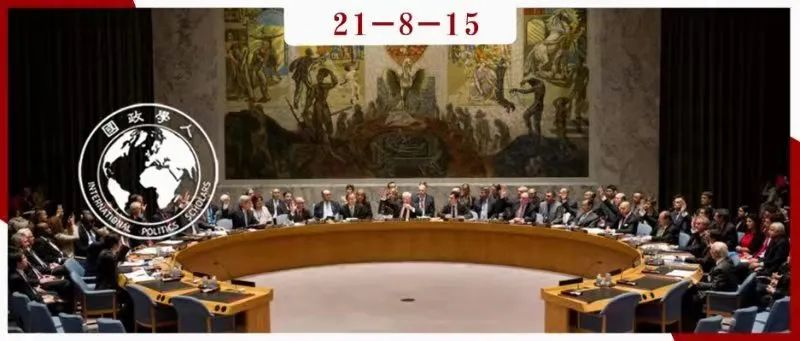

收录于合集 #理论研究 96个

作品简介
作者： Charlotta Friedner Parrat，乌普萨拉大学博士生候选人（现为瑞典国防学院助理教授），研究兴趣为国际关系理论、英国学派与多边组织、国际安全以及防守战术。
编译： 张鸿儒（国政学人编译员，山东大学英语与国际政治专业）
来源： Friedner Parrat, C. (2017). On the evolution of primary institutions of international society. International Studies Quarterly , 61(3), 623-630.
归档： 《国际关系前沿》2021年第8期，总第35期。

内容提要
英国学派认为，首要制度（primary institutions）支撑着国际社会的秩序。然而，在首要制度究竟是什么这个问题上，学者们却有着不同的意见。此外，相比较而言英国学派很少有研究涉及包含在国际组织中的首要制度与次要制度（secondary institutions）的关系。但是，不同层次的国际制度以各自特有的方式推动着国际事务中的变化与稳定。本文认为，首要制度以实践为基础，且为话语所持续建构。这就使得我们可以探讨为国家所创立的国际组织可以如何塑造首要制度。本文选取了联合国安理会为具体案例。在安理会中，不断演化的大国管理（great- power management）首要制度与“冻结的”成员规则（membership rules）次要制度之间存在明显的张力。这种张力造成了首要制度的锁定。事实上，我们应当承认：制度间的张力，而非稳定与和谐，反映了国际社会中事务的正常状态。
文章导读
自20世纪40年代以来，一个有意思的现象是：世界政治中多边互动的正式框架很少发生过变化。国际关系的英国学派将世界政治视为由国家所构成、由共同制度所维持的国际社会。这一学派致力于理解国际政治中深层且根本性的进程，却频繁忽视了秩序的根本保障者（fundamental guarantors）与设计出的国际组织间的互动及二者可能的冲突。 本文对英国学派相关理论进行了修正，试图理清国际社会中以实践为基础的首要制度与国际组织中以条约为基础的次要制度间的关系，为理解国际社会中的持续和变化提供更连贯的理论解释。
以联合国安理会为例。尽管安理会面临着持续不断的改革压力，但安理会成员的构成自1963年非常任理事国席位数由6个增加至9个以来从未再发生过变化。表面上看，这一现象很好解释：五大常任理事国拥有对联合国宪章修改的一票否决权，而扩充安理会席位不符合五常的利益。但英国学派认为，此类国际互动下有着更为复杂的机制，在本案例中则表现为大国管理（首要制度）和安理会成员规则（次要制度）间的复杂互动。
英国学派认为首要制度（如均势、外交、战争、国际法和大国管理等）维持着国际社会的秩序。这些制度要比国际组织更为根本。由于国际组织与首要制度间存在重大区别，英国学派学者往往在研究中避免将国际组织作为研究对象。与此同时，国际组织的研究者往往也很少认真对待国际社会这一研究对象。相较于理性主义框架，从英国学派的视角出发将国际社会与国际组织的关系理论化是可能的。布赞（Buzan）通过普及首要制度与次要制度间的区别推动了这一进程，本文在其基础上进行了更为详细的讨论。
本文认为：一般而言，国际组织，尤其是联合国，不仅仅是多边主义的平台，也会影响首要制度的产生、发展与消亡。这一论点需要我们从关系主义（relationist）而非实体论（substantialist）的角度将首要制度概念化。此外，我们也需要将首要制度看作是动态变化着的，而非固定静止的。只有这样，我们才能考虑新制度的产生与旧制度的消亡。
01
作为秩序工具的制度
英国学派的创立者认为，处于无政府状态下的各国，出于维护主权国家体系的共同利益而创造了秩序。这种共同利益构成了国际社会的基础。与现实主义将无政府状态理解为没有规则的权力政治不同，英国学派认为“国际事务中有合作也有冲突，外交系统、国际法及国际制度会复杂化或修改权力政治的运作”。 对英国学派而言，不应从行为体的理性-成本收益计算（rational cost-benefit calculation）的角度理解制度。相反，制度应被视为历史演化着的对适当行为（appropriate conduct）的共同理解。
马丁·怀特（Wight）讨论了国际社会中各国的彼此关系，并提出了四种类型的制度：信使（如间谍、大使）、会议与国际机构（在现代则为首脑峰会与国际组织）、外交语言和贸易。怀特和沃森（Watson）一样，试图探寻的是各个历史社会的共性。赫德利·布尔（Bull）则将其对首要制度的描述置于当时的冷战现实，认为这些制度存在于特定的社会。
近年来，大多数英国学派研究将首要制度视为国际社会的支柱，但关于何为首要制度却一直辩论不断。如何识别首要制度？首要制度有哪些功能？如果我们将首要制度或至少其特定功能看作是持久存在的，国际社会本身就会相当稳定。特定制度或其功能的存在便成为国际社会定义的一部分。但这一严格的界定可能会使英国学派偏离了对更有趣的问题的探讨。与之相反，如果我们将首要制度看作是有生命周期的，那么国际社会就会变得更动态、更可塑。各种制度及功能不断产生和消失，国际社会则不断适应不同制度及功能的理论基础。因此，要理解国际社会的变化与持续（例如世界政治的变化应否带来联合国安理会成员构成的变化），就不可避免要考虑什么是首要制度、如何识别首要制度、首要制度的生命周期可能是什么、国际社会中首要制度如何与其他组织原则相互关联等问题。
首先需要对首要制度和次要制度进行区分。麦金达（Makinda）率先对首要制度和次要制度的区别进行了辨析。他将首要制度定义为“一组稳定的规则、原则与规范”，将次要制度定义为“正式组织”，其中“首要制度支撑次要制度”。例如联合国这一“次要制度”需要多边主义这一“首要制度”的支撑。也就是说，次要制度的变化需要以首要制度的变化为前提。这实际是一种对制度变迁的单向理解。布赞则更进一步，认为次要制度可以带来变化和持续。此外，布赞还提出了嵌套式制度体系（system of nested institutions）这一概念。例如，在嵌套式制度体系中，大国管理是一种主要的首要制度（master primary institution），战争是一种衍生的首要制度（derivative primary institution），联合国安理会则为一种次要制度。不过，首要制度在布赞的嵌套体系中究竟应处于何种地位，以及上述各种解释中次要制度究竟是什么仍不完全明确。
02
现有对制度理解的缺陷
布赞指出，首要制度间的冲突可能是国际社会变化的驱动力。但目前的框架无法很好地解释不同层次的制度如何带来国际社会中的变化与持续。
首先，英国学派的学者们在如何辨别首要制度上有着不同的意见。例如彼得·威尔逊（Peter Wilson）认为需要有相关数据才能避免定义制度时的主观性，进而他提倡采取一种扎根理论（grounded theory，即从经验数据中归纳出理论）。但这种经验主义认识论的立场忽视了国际社会及相关制度本身可能就是社会建构的产物。此外，这一路径也忽视了经验理论化的展演面（performative aspect），即学者间的辩论乃至学术教学等活动也会影响国际社会参与者对现实的感知与表达。也就是说， 本体论上首要制度作为“事物（things）”可能是存在的，但其是作为主体间共有的理解而存在。
不仅仅是英国学派，其他学术论述对制度的定义也同样往往令人困惑。基欧汉（Keohane）认为“界定制度需要将具体制度（specific institutions）与制度所置身其中的基本实践（underlying practices）区分开来，而后者往往与主权概念相关”。用本文的术语来说，基欧汉主要关注各种类型的次要制度，同时他也将首要制度视为基本实践。 基欧汉认为，从理性主义的视角来看，（次级）制度的变化源于外在因素对机会成本造成了影响；而从反思主义的视角来看，（次级）制度的变化源于基本实践（首要制度）的变化。 不过，基欧汉的相关论述没有考虑到次要制度的构成性功能。
与之相似，马奇（March）和奥尔森（Olsen）将制度定义为“特定情境下，界定特定行为体群体行为适当性的相对稳定的实践及规则的集合”。尽管这一论述认真对待了制度的构成性功能，但低估了解释变化的困难。更完整的解释需要考虑不同层次的制度之间如何相互关联，以及国际社会中的变化与持续。
斯潘德勒（Spandler）认为“确认次要制度的构成性维度，可以帮助我们设计出首要制度及次要制度变化的分析框架，并帮助我们深入研究二者间的联系机制。”但和麦金达和布赞一样，斯潘德勒在强调首要制度和次要制度间区别时并未明确究竟什么是次要制度。这种模糊性使得次要制度在设计国际组织和设计国际组织具体特征间来回摇摆。 在斯潘德勒的变化模型中，首要制度和次要制度均通过构成（constitution）和制度化（institutionalization）两个平行过程参与到构成行为体和影响行为体行为之中。 首要制度和次要制度都会构成行为体（例如使一个国家成为大国），不过后者的构成范围要狭窄些。与此同时，制度化既存在于首要制度的实践（如大国峰会），又存在于各种次要制度的规则制定（如否决权的使用）。只要上述两个过程协调一致，随之产生的正面反馈便会产生稳定。不过当面临外部冲击或缓慢增加的变化时，制度的稳定就有可能受到影响。斯潘德勒的这一论述过于强调了稳定和变化间的二元对立，同时将制度的变化外生化。本文认为，对制度变化的有效解释需要关注制度内部的因素。
相似地，克努森（Knudsen）提出了“根本性制度变化的前理论（pretheory）”，认为“当一个或多个构成性原则得以持续不断再生产时”，制度得以持续。 克努森区分了构成性原则与构成性原则再生产的具体实践， 进而他主张相同的构成性原则（如均势原则）在不同时期可以通过不同的实践（如19世纪欧洲的大国协调与冷战期间的两极对立）进行再生产。此外，克努森认为当构成性原则本身发生变化，或构成性原则再生产的实践发生变化时，首要制度都可能发生变化。
针对各种制度主义的批评适用于上述各种论点，即相较于解释变化，这些论点更适合解释稳定。很大程度上，制度被视为是既定的、静态的，制度的变化也大多被视为源自外部因素。但 如果“国际社会”这一概念是政治互动的全面框架，那么将框架的变化视为源自外部因素显然是困难的。 与之相反，我们应当将变化和持续看作是国际社会内部持久性话语的结果。
总之，学界如果将制度视为解决变化问题和持续问题的有效概念，那么就需要重新全面思考如何将首要制度和次要制度概念化，以及不同层次制度间的互动可能会如何影响国际社会中的变化与持续。
03
对国际社会中制度的再概念化
本文认为，对首要制度的界定不需要过于精确，需要考虑以下两个因素：首要制度的动态本质和首要制度的持续再生产。 这要求学者们不再将首要制度视为本体论上独立存在的“事物”，而是将之视为以再生产实践为基础的持续的话语构建。
就变化而言，人们常常将变化视为特殊情况，而秩序则为常态。艾伯特（Abbott）则指出这一看法可以被颠倒，即 变化才是事物持续存在的状态。任何事物的持续存在，是因为其在不断地被再生产。 以大学为例，一所大学可能持续存在几个世纪，人们不断成为大学的成员，并扮演着相同的角色。随着时间的流逝，这一再生产现象可能会被正式化，例如学术教学中师生间关系从最初的相当自发性发展到现在的正式且井然有序。
首要制度与其他社会关系的不同之处在于，首要制度与特定规范、信念及期待存在着话语联系，而这种话语联系会带来制度的再生产实践，进而构成了首要制度的一部分。我们期待民族国家、国际外交系统和大国管理以特定方式发挥作用。大多数国际话语都与这些期待有关。当我们将联合国安理会决议要求叙利亚的化学武器处于国际社会控制下视为美俄两国的交易时，“大国管理意味着大国要在国际和平与安全上负起责任”这一期待就在话语上不断被再生产。首要制度正是在话语构建中产生。
在将首要制度概念化为再生产实践的情况下，对世界政治以实践为基础的解释与英国学派很契合。不过本文认为，首要制度与实践之间的转化无法直接进行。 尽管首要制度背后的实践在其被确认为首要制度前就可能已经存在，但只有在相关话语中将实践与规范、信念和期待联系起来，实践才能够成为首要制度。 不过， 当实践被写入具有法定约束力的条约并为之建立了相关的组织框架时，这些实践会被正式化为次要制度。 ****本文认为，次要制度可以被理解为首要制度的正式化版本。正因为此，相较于首要制度，次要制度更难发生变化。以安理会常任理事国的席位规则为例。自1945年以来，安理会常任理事国的席位从未发生过变更，这是因为当年《联合国宪章》相关条款的被批准使得次要制度锁定了大国管理这一首要制度。随着时间的流逝，次要制度可能会与相应的首要制度发生冲突。这是因为首要制度在不断演变，而次要制度在没有对条约进行再协商的情况下很难调整。尽管联合国秘书长的选择、国家与非国家行为体间的互动等其他重要实践会非正式地发生变化，但这种变化恰恰说明这些实践并没有被充分正式化为次要制度，也没有与某一特定的首要制度产生直接联系。
作为在话语上与规范、信念以及期待相联系的再生产实践，首要制度不是静止而是演变的。也就是说，“谁是大国”以及“判断大国的标准”可能都会演变。比如说，在1945年，（各国）是否是第二次世界大战的胜利方是判断大国的关键标准；在这之后，（各国）对联合国的经济贡献、参与联合国维和行动的力度等也可能会成为判断大国的重要标准。 与首要制度相对应的次要制度则更为固定，并且锁定了首要制度的演变。 因而，拥有安理会常任理事国席位的国家在某种程度上就是大国，而未拥有安理会常任理事国席位的国家即使拥有强大的实力和影响力，也被认为不完全是大国。在二战结束时，安理会成员规则冻结了对大国管理的理解，也冻结了大国的构成。
关系主义路径可以进一步改进上述主张。 如果将关系概念化为先于实体间关系而存在，我们便可以认真对待变化的内源性。 英国学派很容易适应这一思考方式。比如说，一个国家的产生需要得到其他国家的承认，需要被承认为联合国的一员。对于那些想成为安理会常任理事国的国家来说，没有被承认为安理会的常任理事国，它们就很难成为真正的大国。
总之，英国学派如果要对不同层次的制度以及这些制度对国际社会持续和变化的影响有清晰的论述，就需要考虑以下几点：首先，首要制度应被概念化为在话语上与规范、信念、期待相联系的持续的再生产实践。这些实践经过话语合法化才会使得首要制度成为国际社会的支柱。其次，次要制度应当被理解为首要制度的正式化版本。最后，首要制度和次要制度都会影响国际社会中的变化与持续。首要制度会演变和构成（evolve and constitute）相关实体，而次要制度会“冻结”或修改（freeze or modify）制度正式化时的条件。
04
结论
我们不应将首要制度视为是固定的、静态的。相反，首要制度为话语相联的实践所不断再生产。也就是说， 通过与规范、信念和期待形成的话语联系，再生产实践被制度化为首要制度 。这也意味着当脱离了话语合法性时，首要制度也会被去制度化。次要制度作为首要制度的正式化版本，相对来说更为稳定。 在次要制度产生之初，次要制度反映了当时首要制度的状态，但随着时间的流逝，首要制度不断演变，次要制度便可能会与之产生冲突。 这反映出次要制度会对首要制度演变产生影响。
以上对制度的再思考有利于更细致地理解国际社会中的变化和持续。英国学派常常将国际社会中的首要制度视为横跨长时段的相对稳定的现象，而国际组织最多被认为发挥着辅助性的作用。但本文对制度的再概念化表明， 首要制度是灵活可塑的，次要制度在稳定或修改首要制度上发挥着重要作用。 进一步讲，本文表明国际组织在当今的国际社会中扮演着重要角色，进而为英国学派与国际组织研究之间搭建起了沟通的桥梁。
此外，将首要制度理解为关系性建构，意味着首要制度不是可以被观察到的现象，进而也无法仅仅通过收集经验数据来进行研究。概念分析（conceptual analysis）可能是更好的方法。因而，本文对首要制度的再诠释致力于推动（学界）全面审视英国学派的元理论假设：英国学派所研究的是什么样的现实？我们又如何能了解这一现实？
译者评述
20世纪40年代以来，世界局势发生了重大变化，但为何联合国安理会常任理事国的席位并未进行相应调整？对于这一问题，常见的解释多采取理性主义路径，即扩充安理会席位不符合五大常任理事国的国家利益，因而五常会动用否决权否决对联合国宪章进行修改的任何可能性。尽管这一解释具有一定说服力，但本文作者提出，英国学派可以为上述现象提供更为深层的解释，即作为首要制度的大国管理与作为次要制度的安理会成员规则之间的冲突。
本文作者将首要制度定义为经过话语建构（与规范、信念及期待建立起话语联系）的再生产实践，这一话语构建的过程就是实践制度化的过程。次要制度则为首要制度的正式化（通过签订条约、建立组织架构等方式）版本，但在形成之后由于路径依赖效应，会具备一定自主性，反过来塑造首要制度的演变。反映在国际社会中，具体的国际组织及规则流程（次要制度）建立反映了当时的主导理念（首要制度），但随着时间的流逝，次要制度的变化可能赶不上首要制度的变化，进而二者间会产生冲突。不过，本文作者并未明确再生产实践与制度间的互动关系，一定程度上削弱了理论的说服力，同时似乎也带来了本体论上的混乱：一方面作者认为首要制度在本体论上不是独立的事物，而是“作为主体间共有的理解而存在”，另一方面又将首要制度概念化为“与特定规范、信念及期待存在着话语联系的再生产实践”，前者更多是观念本位，而后者更多强调实践本位。
国际社会是英国学派的一个核心概念。作为一种规范性和与规范相关的理论[1]，英国学派从更广义的角度看待制度，例如赫德利·布尔（Hedley Bull）就认为制度是一系列为实现共同目标而形成的习惯和实践[2]。制度被英国学派视为国际社会的规范框架，诸如均势、国际法、大国管理等制度则构成了国际社会的基础，也为英国学派“世界社会”的构想提供了理论支撑。以布尔等为代表的传统英国学派研究虽有强调制度的作用，但其关注的仅仅为国际社会的基本性原则，未对制度进行区分，对国际组织等具体形式也是关注甚少。面对经济全球化迅速推进、国际组织作用日益突出的现实变化和新自由制度主义理论的兴起，英国学派需要有所回应。在老一代英国学派学者研究的基础上，麦金达（2002）细分了首要制度与次要制度[3]，巴瑞·布赞（2004）则在《从国际社会到世界社会：英国学派理论和全球化的社会结构》一书中对此进一步发展，提出了首要制度的等级制、嵌套式制度体系等颇具解释力的主张[4]。不过在上述研究中，首要制度与次要制度间的复杂关系一定程度上被忽略了，进而为本文提供了切入点。
本文认为首要制度不应被视为静态的，但实际上以往的英国学派学者也注意到了首要制度有可能会发生变化。例如怀特（1977，1978）认为均势会随着时间而变化[5]，布赞（2004）亦曾讨论首要制度本身消失（如殖民主义）的可能性。不过以往大多研究并未明确变化的机制，而这一现象的根源在于他们对首要制度的定义和本体论假定本身不适合来解释变化。针对这一研究缺陷，克努森（2013）等人已做出了弥补和推进，例如克努森区分了首要制度中固有的构成性原则和原则得以再生产的系列实践，进而首要制度的连续性表现为构成性原则的持续再生产，首要制度的变化表现为构成性原则再生产实践的变化，或构成性原则本身的变化[6]。本文一定程度上是克努森等人研究的延续，但在理论建树上缺乏新意，似乎是对既往研究的复述。
本文的理论建构与案例选择间似乎也存在一定偏差。首先，本文作者提出首要制度是动态变化的，并以制度化与去制度化来解释首要制度的生命周期。但在本文选取的安理会成员规则这一案例中，首要制度的生命周期并未得到充分体现，至多是“谁是大国”以及“判断大国的标准”发生了变化，而这两者能否被视为首要制度仍值得商榷。在此处借鉴布赞提出的“主要首要制度”和“派生首要制度”的区分或许会更有说服力。其次，次要制度会如何塑造首要制度？本文提出次要制度在经过正式化后，会在稳定或修改首要制度上发挥着重要作用。但本文选择的案例至多可以解释次要制度如何稳定首要制度，但在如何修改首要制度上无法为本文理论提供有力支撑。
参考文献
[1] Barry Buzan, and George Lawson. “The English School: History and Primary Institutions as Empirical IR Theory?.” Oxford Research Encyclopedia of Politics , 2017.
[2] 章前明：《英国学派与新自由制度主义: 两种制度理论》，载《浙江大学学报 (人文社会科学版)》，2008年第2期，第71页。
[3] Samuel M. Makinda, “Hedley Bull and global governance: a note on IR theory.” Australian Journal of International Affairs , 2002, Vol. 56, No. 3, pp.361-371.
[4] Barry Buzan, From International to World Society? English School Theory and the Social Structure of Globalization , Cambridge: Cambridge University Press, 2004, pp.161-204.
[5] Martin Wight, Systems of States ( edited with an introduction by Hedley Bull ), Leicester: Leicester University Press, 1977; Martin Wight, Power Politics ( edited with an introduction by Hedley Bull and Carsten Holbraad ), Leicester: Leicester University Press, 1977
[6] Tonny Brems Knudsen, “Master institutions of international society: Theorizing continuity and change.” Paper for the 8th Pan-European Conference on International Relations, 2013; Tonny Brems Knudsen, “Master institutions of international society: Solidarist architecture.” Paper for the 54th ISA annual convention, 2013.
词汇整理
首要制度 primary institution
次要制度 secondary institution
大国管理 great power management
扎根理论 grounded theory
话语建构 discursive construction
责编 | 尤力 朱忻博 施榕
排版 | 胡蝶 臧泽华
文章观点不代表本平台观点，本平台评译分享的文章均出于专业学习之用, 不以任何盈利为目的，内容主要呈现对原文的介绍，原文内容请通过各高校购买的数据库自行下载。
好好学习，天天“在看”

国政学人
支持学术公益与知识传播
微信扫一扫赞赏作者 __赞赏
已喜欢，对作者说句悄悄话
取消 __
发送给作者
发送
最多40字，当前共字
上一页 1/3 下一页
长按二维码向我转账
支持学术公益与知识传播
受苹果公司新规定影响，微信 iOS 版的赞赏功能被关闭，可通过二维码转账支持公众号。